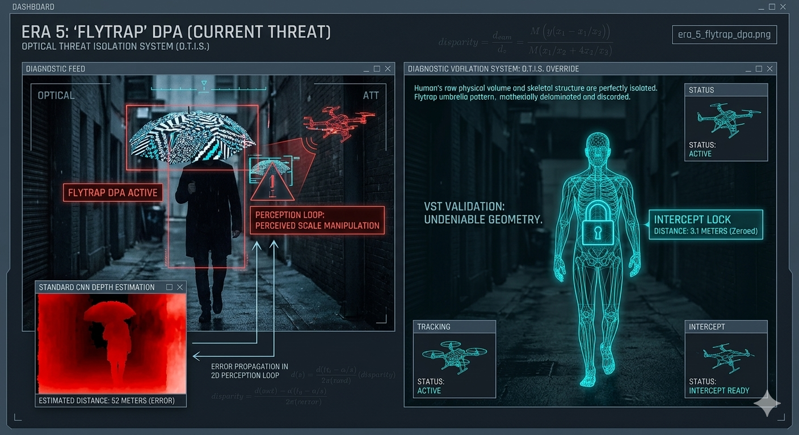

Era 5: Distance-Pulling Attacks (DPA)
We have reached the modern apex of adversarial interference. While previous eras targeted sensory inputs (like LiDAR ghosting) or hardware equilibrium (like acoustic resonance), the Distance-Pulling Attack (DPA) targets the cognitive math of perception itself. It is a sophisticated exploit that weaponizes how autonomous software calculates physical proximity, creating an optical lie that renders traditional targeting completely obsolete.

In the visualization above, notice the stark contrast between the two paradigms of machine perception. On the left, the legacy camera feed is paralyzed by the 'FLYTRAP OPTICAL LIE'. The adversarial pattern violently shifts the bounding box scale, resulting in a critical DISTANCE: UNKNOWN error. The drone sees the target, but its logic loop has collapsed. On the right, the O.T.I.S. matrix simply deletes the visual noise, isolating the physical wireframe to generate a perfect, undeniable DISTANCE: 2.1 METERS calculation.
The Mechanics of Scale Manipulation
To understand why the Flytrap attack is so effective against legacy C-UAS, you have to understand how standard drones perceive depth without active radar. Most autonomous navigation stacks rely on bounding-box algorithms combined with perceived pixel-scale.
If the drone's neural network recognizes a human, it assumes a standard height of roughly 1.7 meters. It calculates the distance based on how many pixels that 1.7-meter object occupies on the camera sensor. The DPA exploit breaks this fundamental assumption.
Weaponizing the Bounding Box
A DPA asset—like the Flytrap umbrella—displays a mathematically warped, non-repetitive geometric pattern designed via gradient descent. When the drone's camera views this pattern, the neural network's feature extraction layers become confused about the object's boundaries. It incorrectly expands or shrinks the tracking bounding box.
Because the bounding box size suddenly changed, the drone's logic loop determines the target's distance must have also changed. The drone is physically locked onto the target, but mathematically blinded to its proximity. A target sitting 5 meters away can trick the drone into believing it is 50 meters away, completely neutralizing intercept timing.
The Paradigm Shift: Undeniable Geometry
The defense industry's initial response to DPA was to train AI models on thousands of images of adversarial umbrellas to try and "teach" the drone to ignore them. At SkyGuard, we recognized that playing whack-a-mole with infinite optical variations is a losing battle.
The InSitu Labs Solution: Kinetic Contour Mapping
We bypass the cognitive gap entirely by stripping the visual feed out of the depth calculation equation. The Optical Threat Isolation System (O.T.I.S.) leverages Kinetic Contour Mapping (KCM) to reduce the environment to pure structural depth.
We do not care how many pixels a 2D pattern occupies on a screen. By cross-referencing edge data through dual-lens disparity, we generate a live, volumetric spatial mesh. The Flytrap's optical pattern has zero thickness and zero physical depth in 3D space. O.T.I.S. mathematically delaminates the 2D lie, skeletonizes the physical structure behind it, and locks the kinetic intercept onto the true center mass.
You cannot spoof true depth.
Dive into the O.T.I.S. dashboard and see how we isolate the math for a zero-latency intercept.
See how O.T.I.S. Sees